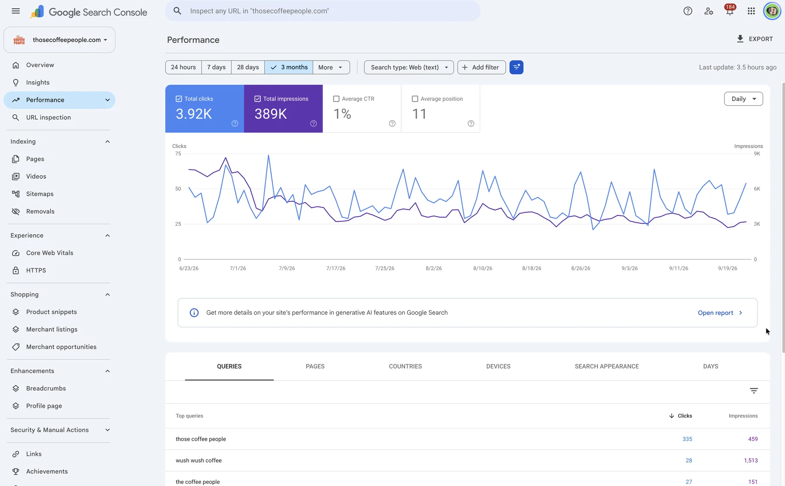

Technical SEO audit
Crawling, indexing, broken links, redirects, duplicate pages, site speed and structured data. I check what Google actually sees and fix what stops it from ranking the pages that matter.
I'm a freelance SEO consultant in Porto, Portugal, and also a web developer, so the problems an SEO audit finds get fixed in the code, not just listed in a report. I work on technical SEO, page content and local SEO for businesses in Portugal, the UK and the US.

Most of my SEO work falls into four areas. I usually start with the first, because it shows where the others matter.
Crawling, indexing, broken links, redirects, duplicate pages, site speed and structured data. I check what Google actually sees and fix what stops it from ranking the pages that matter.
Titles, headings, internal links and the content on your key pages, matched to what people actually search. I write it in plain language, not keyword lists.
For businesses that serve an area: Google Business Profile, location and service pages, citations and reviews. See my local SEO services for the detail.
Collection and product pages, faceted navigation, migrations and redirects for Shopify and WooCommerce stores, where a lot of SEO problems start in the theme code.
A lot of SEO reports end up in a drawer because nobody has the time or access to make the changes. I do the changes myself: the redirects, the page templates, the structured data, the speed work. You get one person who finds the problem and fixes it, instead of a consultant and a developer passing tickets back and forth.
I won't promise a position on Google, because nobody honestly can. What I can promise is a clear list of what's holding the site back, in order of what's likely to matter most, and the work done properly.
Every audit starts with Google Search Console, because it shows what Google has actually indexed and which searches already bring impressions. Then I crawl the site the way a search engine does and look for the things that quietly cost rankings: pages blocked by mistake, redirect chains, duplicate titles, thin pages, broken internal links and missing structured data.
You get a short, ordered list, not a 90-page PDF. Each item says what is wrong, why it matters and how long the fix takes. The ones I can fix in the code I fix. The ones that need you, like new content or a business decision, I explain in plain language.
Most of the businesses I work with are small: a local service business, an online store, a consultancy with a few key pages. They don't need an agency retainer. They need someone who can find the real problem, fix it and show the result in Search Console. If your site runs on WordPress or Shopify, I can work directly in the theme, which is where many SEO problems start.
Cleaned up technical SEO across the site, fixing broken links, 404 errors and URLs that pointed to the wrong place, and improved loading speed to around 65 on mobile and 92 on desktop in PageSpeed.
Optimised the Google Business Profile and worked on local SEO so new customers could find the restaurant when searching nearby on Google Maps.
Worked on the Google Business Profile and local SEO, and walked the owner through how people actually search for a barber nearby.
A free 20-minute call about the site, the business and what you want from search.
I check the technical setup, the content and the competition, and list what matters most.
I make the changes myself, starting with the ones most likely to make a difference.
Search Console and GA4 show what changed, and we decide what to do next from there.
An SEO consultant works out why a site isn't getting the search traffic it should, and what to change. That covers the technical side (can Google crawl and index the right pages), the content (does each page answer what people search for), and authority (do other sites and listings point to yours). As a freelance SEO consultant who also codes, I make the changes too.
Technical fixes can show up within weeks, once Google recrawls the pages. Content and authority work usually takes a few months to build. I track progress in Search Console so you can see what is moving, rather than waiting and hoping.
It depends on the size of the site and how much needs fixing. After a first look at your site I send a clear quote for the work, so you know the cost before anything starts.
Yes. I work as an ecommerce SEO consultant for Shopify and WooCommerce stores: collection and product pages, filters that create duplicate URLs, migrations and redirects, and the speed of the theme itself.
Yes, online. I work with businesses in the UK and the US as well as Portugal. In-person meetings are only for businesses in Porto, Vila Nova de Gaia and nearby.
Yes. Most of my SEO work is on sites I didn't build. I start with read access to Search Console and the site, check what is there, and only change what needs changing.
Send me the site and what you want from search. I'll tell you honestly where I think the biggest gains are.